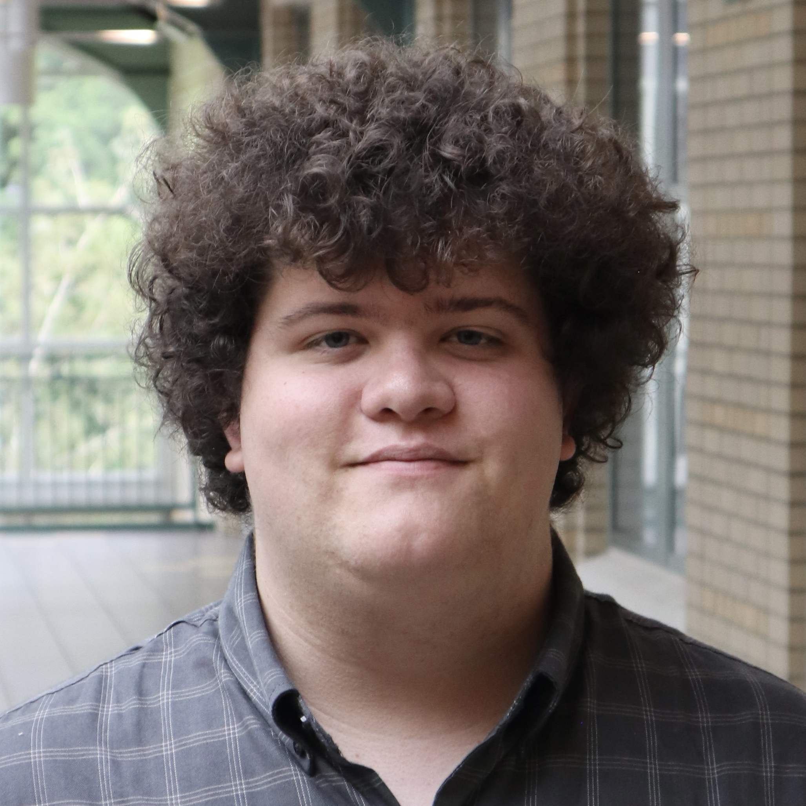

|
William Valentine
I'm a junior at Rose-Hulman Institute of Technology, studying Computer Science with minors in mathematics, imaging, and cognitive science.
My research explores the intersection of human-robot interaction and computer vision, with a focus on developing frameworks that use a visual understanding of a situation to aid computer systems. Some papers are highlighted.
I have had the honor of being mentored by many fantastic researchers, including, but not limited to,
Dr. David Crandall,
Dr. Selma Šabanović,
Dr. David Feil-Siefer, and
Dr. Michael Wollowski.
I was recently named as a Goldwater Scholar for 2026-2027 focusing on Human-Robot Interaction!
For the summer of 2026, I am a Summer Scholar at Carnegie Mellon University's Robotics Institute, working alongside Dr. Aaron Steinfeld to explore human-robot interaction for blind user navigation.
Email /
CV /
Scholar /
Github
|

|
Research
My research projects explore computer vision and real-time perception systems, from creating explainable models for emotion recognition and refining pose-alignment techniques for cooperative vehicle perception to leveraging computational tools to address markers of neurological disease. My work emphasizes explainability, precision, and practical applications in real-world environments.
|
|
|
BehaviorKit: A Multi-modal Real-time Behavior Analysis Library for Robots
William Valentine,
Selma Šabanović,
David Crandall,
Weslie Khoo
HRI, 2026 (Short Paper)
paper /
code
BehaviorKit is an open-source library that enables robots to perform real-time multimodal behavior analysis. It combines gaze tracking, speech transcription, sentiment analysis, facial affect estimation, and pose/face landmark detection, returning processed results to robots via WebSocket and supporting ROS or custom clients.
|
|
|
From Long-Term HRI to Dementia Care: Scoping Personalization Approaches
William Valentine,
Selma Šabanović,
David Crandall,
Weslie Khoo
HRI, 2026 (LEAP Workshop)
paper
This scoping review examines personalization approaches in long-term human-robot interaction for older adults with cognitive impairment. It categorizes prior work into no user model, static personalization, dynamic within-session adaptation, and dynamic cross-session adaptation, and identifies a key gap: the absence of published systems that implement closed-loop, cross-session adaptation to progressive cognitive decline.
|
|
|
Ghost in the Machine: Exploring Designed Fear in HRI
Brandon Connor,
William Valentine,
Long-Jing Hsu,
Waki Kamino,
Selma Šabanović,
David Crandall,
Weslie Khoo
HRI, 2026 (Late-Breaking Report)
paper
This paper explores how robots might evoke fear safely and intentionally. Inspired by horror media and immersive entertainment, we outline design strategies and analyze how robot form, motion, and ambient cues influence perceived threat.
|
|
|
IRIS: Interactive Robot for Ikigai Support
Weslie Khoo,
Long-Jing Hsu,
William Valentine,
Brandon Connor,
Tao Yat Kong,
Amous Khoo,
Waki Kamino,
Selma Šabanović,
David Crandall
HRI, 2026 (Demo)
demo
IRIS is a social robot that helps older adults reflect on life purpose and meaningful memories through interactive conversations. Implemented on LuxAI’s QT humanoid robot, it combines structured prompts with AI-generated follow-ups to create personalized dialogue that adapts to individual preferences and cognitive abilities. Co-designed with older adults, IRIS responds to nuanced emotions—including bittersweet reflections—and demonstrates how socially aware robots can support well-being and personal reflection.
|
|
|
Assessment of the Capabilities of Multimodal Large Language Models in Locating and Resolving Ambiguities during Human-Robot Teaming
William Valentine,
Michael Wollowski
AHFE, 2025 (Oral Presentation)
AHFE / presentation
We explored a method to accurately (we achieve >81% accuracy) locate and resolve ambiguous portions of instructions related to common household tasks given to robots.
|
|
|
HCC: An
explainable framework for classifying discomfort from video
William Valentine,
Megan Webb,
Christopher Collum,
David Feil-Seifer,
Emily Hand,
ISVC, 2024 (Oral Presentation)
ISVC
The Human Comfort Classifier (HCC) detects discomfort in real time from video, combining pose estimation, facial landmarks, and sentiment analysis in a transparent, rule-based model. This approach is beneficial for social skills training and achieves 78% accuracy without relying on deep learning, ensuring explainable feedback for users.
|
|
|
BB-Align: A Lightweight Pose Recovery Framework for Vehicle-to-Vehicle Cooperative Perception
Lixing Song,
William Valentine,
Qing Yang,
Honggang Wang,
Hua Fang,
Ye Liu
ICDCS, 2024 (Oral Presentation)
ICDCS / presentation
BB-Align is a two-stage framework that improves pose accuracy in vehicle-to-vehicle (V2V) perception by using Lidar Bird’s-eye View (BV) images and bounding boxes. It aligns data from different cars, correcting pose errors without requiring extra training, making it suitable for real-world V2V applications. Tests show BB-Align enhances pose accuracy, achieving errors under 1m and 1°, and improves object detection in error-prone scenarios.
|
|
|
Modeling and screening aggregation inhibition of amyloid-beta peptides by small molecules as potential drug candidates
(alphabetical) Kara Dawson, Paul Martino, Emma Ryan, William Valentine, Abigail Wheeler
Houghton University SRI, 2023
presentation
This research focused on using AutoDock Vina to model protein-ligand binding for kinase inhibitors like Regorafenib, targeting Alzheimer’s pathology by inhibiting tau hyperphosphorylation and amyloid-beta aggregation. This approach aims to identify effective compounds that can slow disease progression.
|
|
|
Intersection Traffic Automation for Vehicles
William Valentine,
Avery Belanger,
Jie Zhao
Houghton University SRI, 2023
presentation
The project tests a centralized control system using computer vision to manage vehicle and pedestrian flow at intersections. By employing YOLOv8 for real-time detection, it automates queuing to reduce wait times and improve safety.
|
This website format is fantastic, kudos to Jon Barron.
|
|
{kind=link}